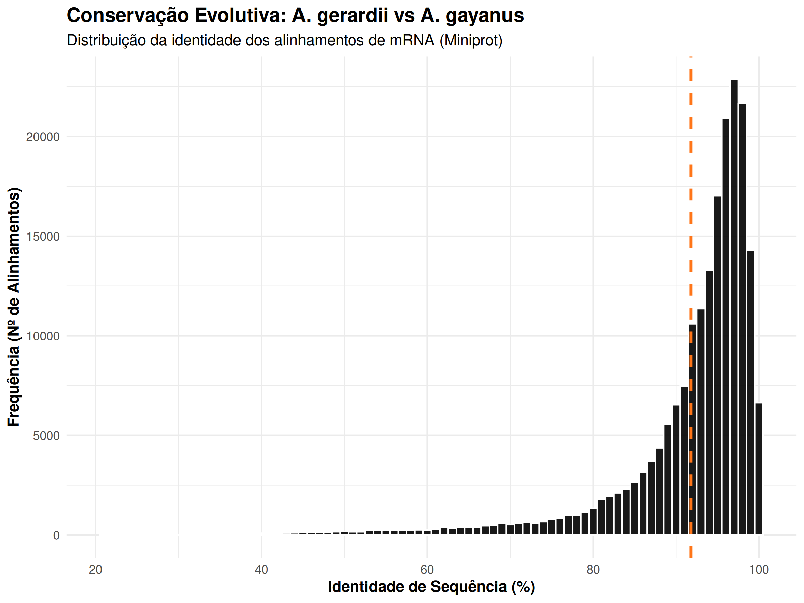
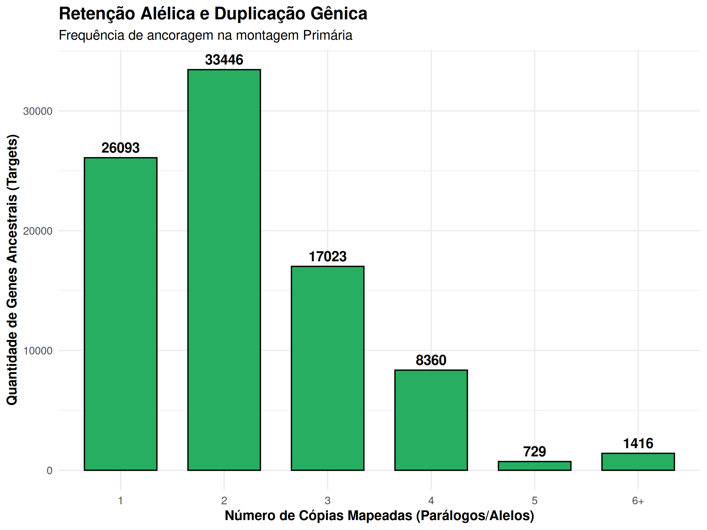

A precisão da predição gênica preditiva (ab initio) depende da qualidade das evidências biológicas fornecidas aos softwares. Porém, como devem imaginar não existem de dados de transcritos (RNA-seq) de A. gayanus, então resolvi adotar uma estratégia focada em homologia
Usei o proteoma de uma espécie parente próxima, o Andropogon gerardii (hexaploide), para ancorar essas evidências. Para realizar este mapeamento, a ferramenta utilizada foi Miniprot, desenhado para alinhar estruturalmente proteínas contra genomas.
Esse software tem à capacidade de lidar nativamente com a ocorrência de íntrons e de ignorar as regiões não codificantes com base em modelos de k-mers.
O arquivo alvo foi a montagem primária submetida ao soft-masking.
Como evidência de homologia, utilizamos as sequências proteicas do genoma do A. gerardii, construídas e validadas a partir de dados de RNA-seq publicadas pelo JGI.
Estrategicamente, escolhemos o arquivo da isoforma principal de cada gene (primaryTranscriptOnly).
Esse controle evita que o mapeamento simultâneo de múltiplas isoformas alternativas de um único gene gere uma redundância matemática desnecessária.
Essa redundância poderia enviesar o treinamento do modelo preditor da próxima etapa.
Rodando no servidor, o comando do Miniprot foi disparado para mapear o proteoma contra a montagem:
nohup miniprot -t 16 -gff pri_corrigida.fa.masked \
AgerardiHAP1_783_v1.1.protein_primaryTranscriptOnly.fa \
> evidencias_Agerardii_miniprot.gff 2> miniprot.log &O sucesso e a robustez do mapeamento foram avaliados quantificando a proporção do proteoma de entrada que obteve sucesso na ancoragem homóloga contra o capim-andropogon.
Os dados extraídos revelam que, a partir das 89.426 isoformas únicas fornecidas (A. gerardii), o Miniprot construiu 197.414 modelos de mapeamento de mRNA estruturados no genoma-alvo.
A proporção matemática de saída versus entrada (~2,2 vezes) evidencia a biologia de A. gayanus por ser tetraploide.
O arquivo proteico utilizado (Haplótipo 1 do A. gerardii) constitui uma referência representativa colapsada, enquanto a montagem de A. gayanus preserva a natureza estrutural tetraploide.
A obtenção de mais de 197 mil ocorrências demonstra que, em média, o algoritmo detectou a retenção de dois a três parálogos ou alelos subgenômicos distribuídos pelos cromossomos da planta para cada gene ancestral pesquisado.
Além da quantidade alta de alinhamentos, métricas de identidade interna extraídas do GFF demonstraram altos índices de conversão.

Como podemos ver na distribuição acima, a identidade dos alinhamentos a média gira em torno de 92% de identidade.
Isso indica que os splice sites (junções de éxon/intron) estão altamente preservados ao longo da família Andropogoneae. A obtenção destas coordenadas serve como base para guiar a predição definitiva por ferramentas ab initio e modelagem estatística
